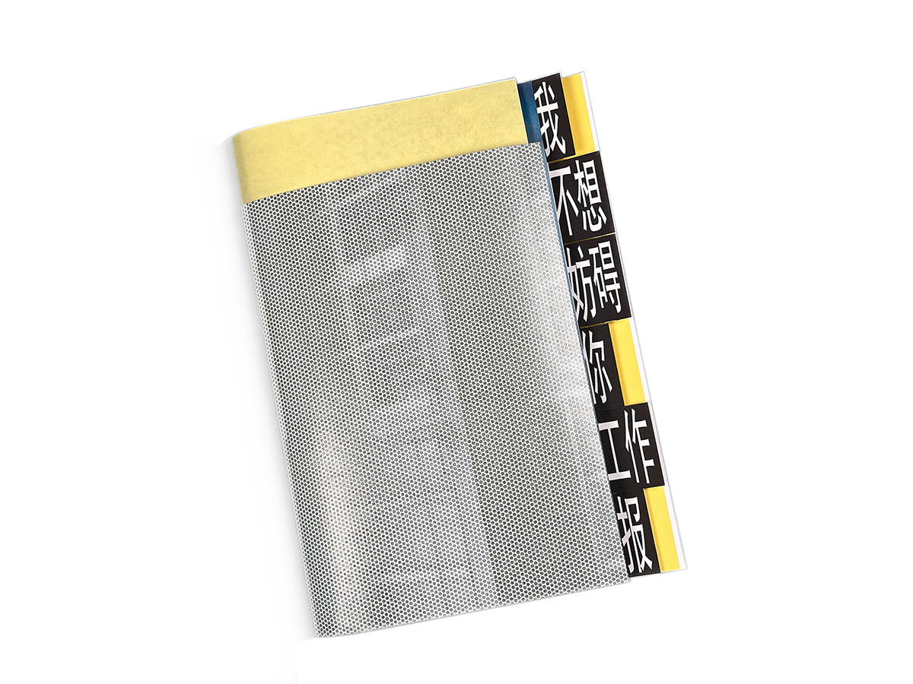
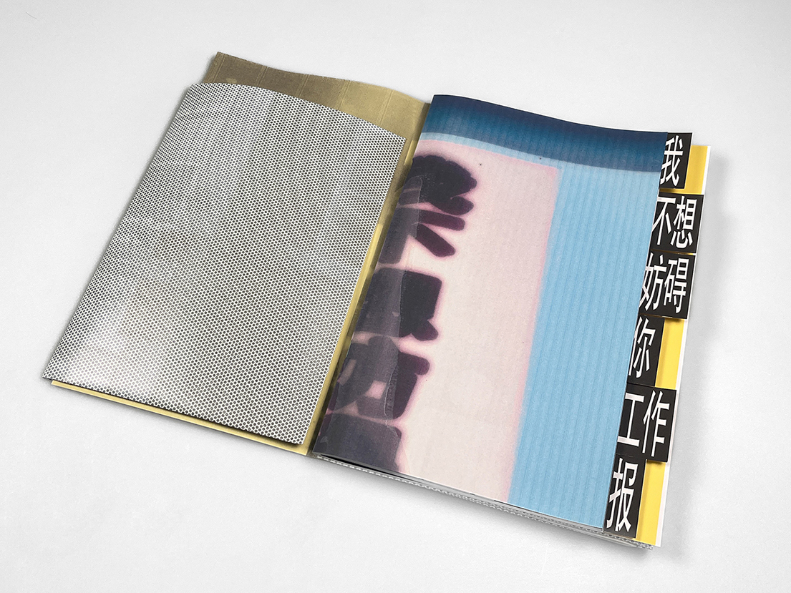
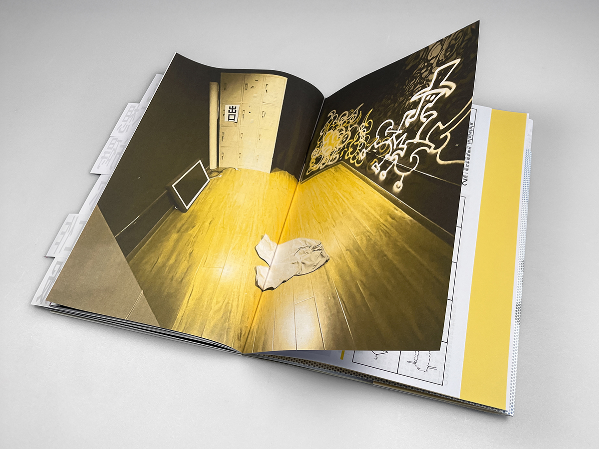
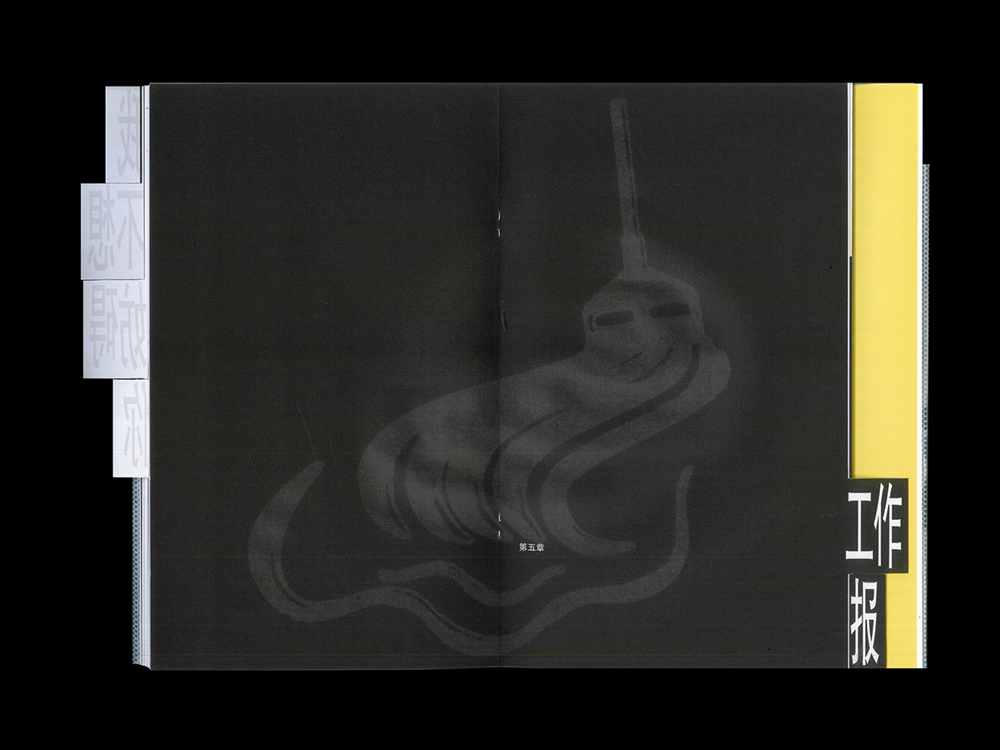
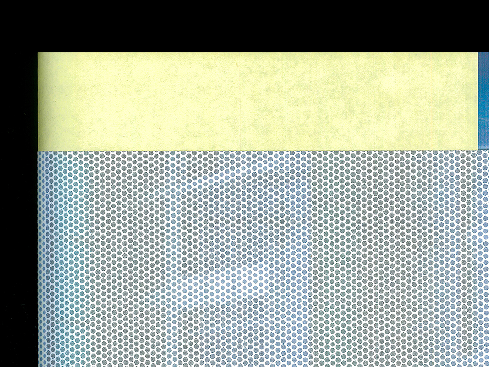
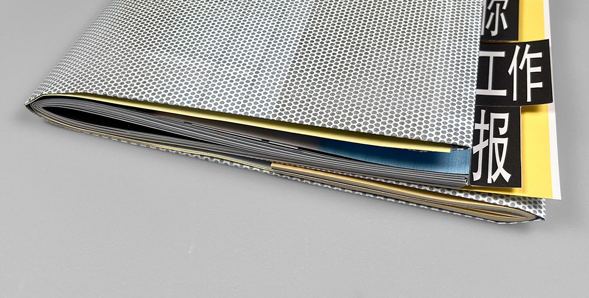
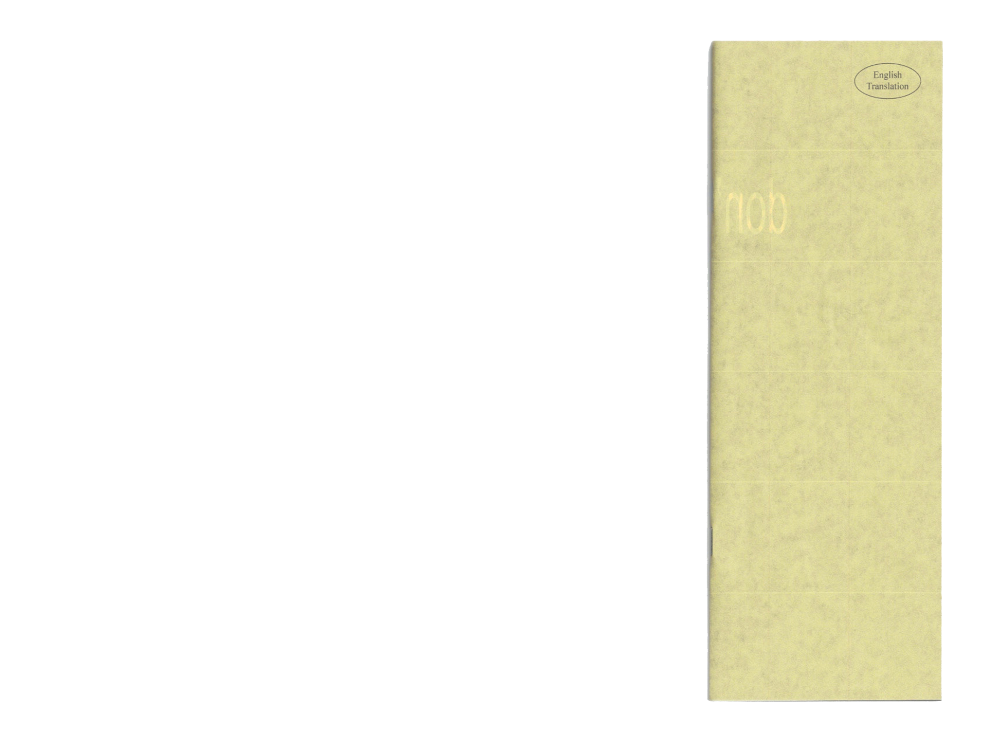

Experimental Publication
wbxfangzb


This project articulates my art collective’s practice, including its values, approach, and work, to a public audience through a physical book. The content, generated through conversations between members, was primarily written by me and edited collectively. The design aims to maintain consistency with the collective’s vernacular aesthetic, complement its values and approach and provide a quirky and engaging reading experience. Positioned as a coherent but unserious object, the book is saddle-stitched, in an A4 variant format, and of 80 pages, using inexpensive materials and paperstock commonly used in office and everyday context. The entirety of the book is written in Chinese only and a full English translation is supplemented separately. With an overall deadpan humour, it serves an authentic representation of who we are, communicating and advocating for our approach.



The Chinese typeface chosen for this project is Heiti, one of the five most commonly used contemporary Chinese system font. It is used in the collective’s logo, mischievously stretched and blurred. It sets the tone of the collective’s aesthetic and manifested as a statement, as it is ubiquitous but also deemed crude and unpolished in a design context. The choice of typeface reinforces the book’s overall utilitarian aesthetic that is consistent with the collective’s voice. The basis of the layout is a grid based on the hight and width of the tabs. This angular structure echoes the typeface choice and infographic language. The body text is justified according to the monospaced Chinese character, and the typographic logic is generally image-led, with half-polished details, dangerous margins, intentional misalignments.
Various design details work together to make the content easier to understand and more engaging. The index tabs leads the physical and narrative structure of the book, functioning both as title and contents. Forms to fill out directly invite readers to engage with our viewpoint and to introspect. Pages in different orientation require readers to physically rotate the book to read; annoying details grab attention or interfere with perception. To support the book’s overall utilitarian aesthetic, the design draws on the graphic language of diagrams, tables, forms, maps, and floorplans. Rather than acting as decorative illustrations, these graphic forms are used to organise actual content and information and convey a vernacular tone. These graphic expression also support the reader’s active engagement with the content through a dynamic and familiar everyday visual vocabulary compared to blocks of text.
The material development process involved testing different paper stocks, looking not only at their colours and feel, but also at printing performances on a home printer, the pairing with other papers, and both the front and back sides. The final choice favours raw and inexpensive materials. The jacket uses the backing paper of one-way vision vinyl, a leftover material with unique texture. The endpaper is the backing paper of regular sticker paper, which can be printed one-sided. Its back has a different glossy texture, adding to the overall materiality. The cool-white copy paper for text is consistent with the choice of an A4 variant format, saddle-stitch binding, and system font, referencing the overall manual-like content and layout. The lighter thickness also allows the ink slightly bleeds through to the back and the total weight of the book to be light and flexible.


